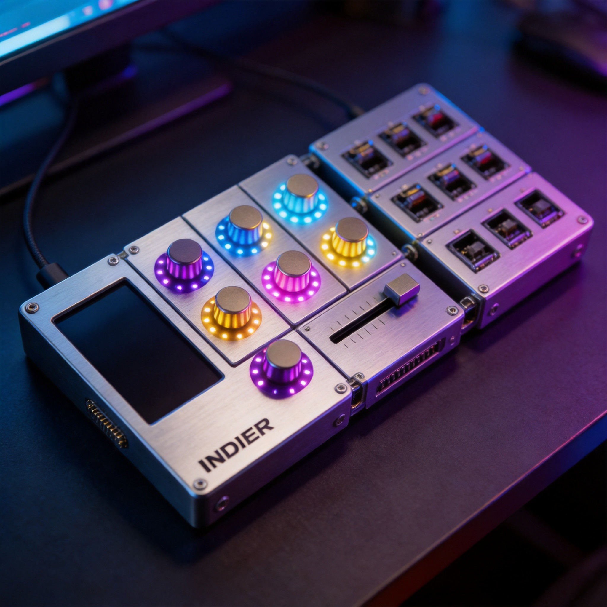
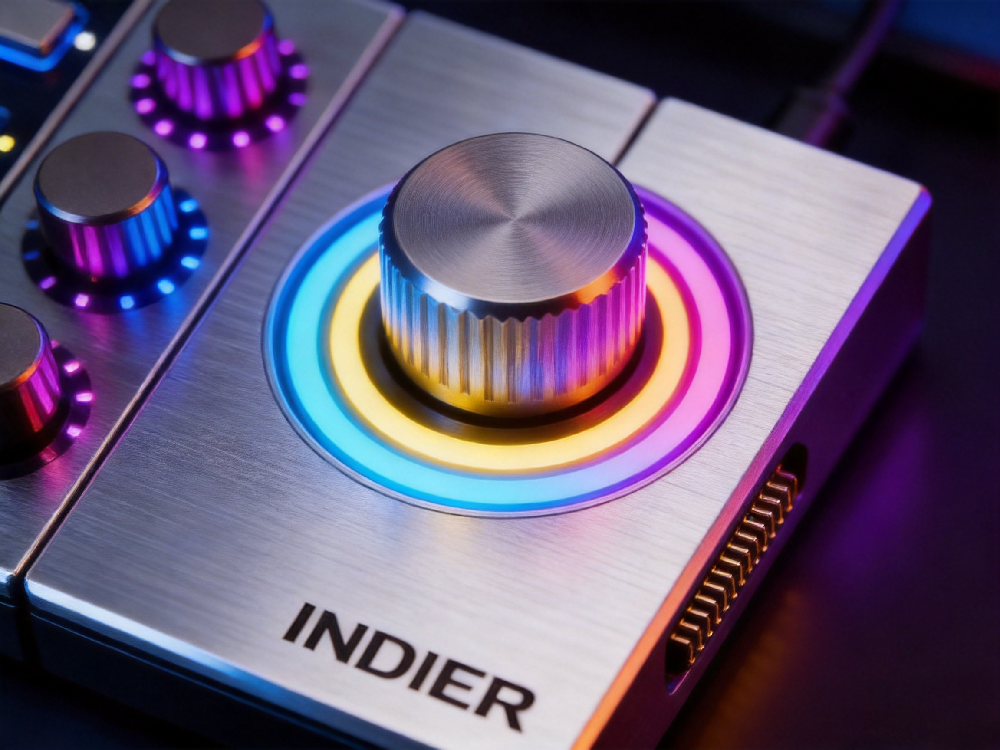
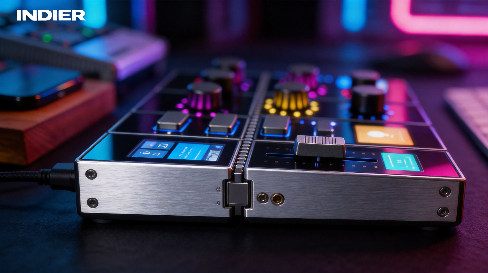

Core Display
竖屏主控，显示波形、生成状态、版本记录和当前参数。
- 定位
- 大脑 / 时间线
- 表面
- 玻璃 + 铝合金边框

模块化系统

竖屏主控，显示波形、生成状态、版本记录和当前参数。
带光环反馈的旋钮模块，用来控制风格、情绪、节奏和音色权重。
用于起伏能量、混音比例和生成强度的长行程手动滑杆。
热插拔机械按键触发 Jam、Retry、Release，支持换轴定制手感。
精密与力量
INDIER 的视觉标准是"精密控制台"：深色阳极氧化铝合金质感、玻璃面板、金色触点、低缝隙磁吸模块连接、霓虹状态灯反馈。网页要卖的是硬件可信度，不是AI口号。
从动作到音乐
Made with INDIER
每一首都来自不同的控件配置——别的控制器只能遥控软件，INDIER自己创作。
做你自己的

预购套餐
Core + Key，最低门槛体验"按下生成"。
Core + Spin + Slide + Key，完整控制台，旋钮、推子、按键全配，适合深度创作和视频展示。